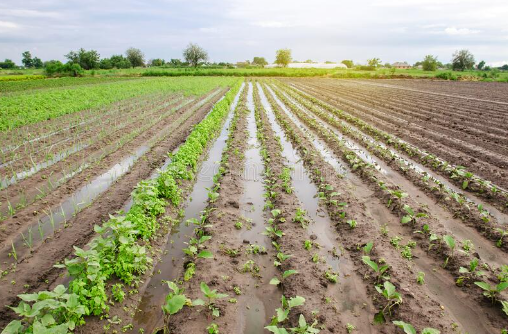

About Us

It is evident that there has been a sharp decline in the
percentage of deaths in Odisha due to the natural calamities in the last two
decades. However, we also need to focus on the factors which result in financial
loss to the state such as agricultural damage. Thus we need to lookout for both the
human loss as well as agricultural loss. Our website aims the same by aiding the
government in it's efforts to help the people by encouraging the public to assist
those in need of the required support and save the mankind and also prevent the
agricultural damage. Those in the desired age group are requested to volunteer.